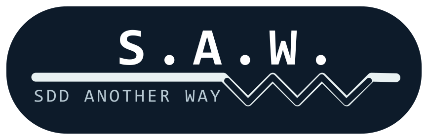
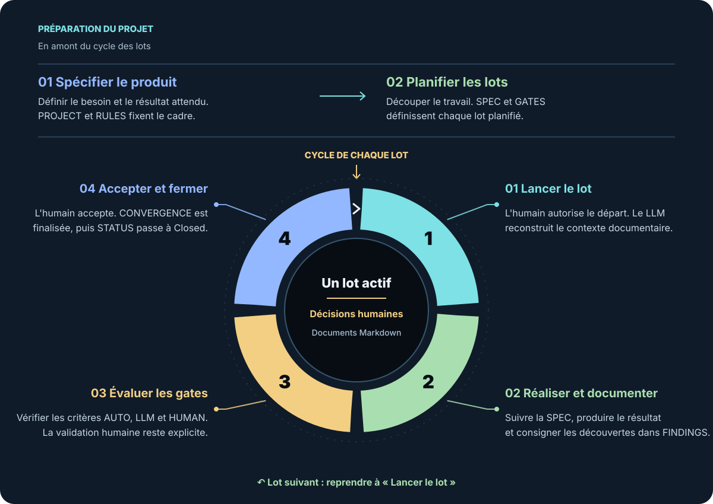

AI centric
Le même LLM peut produire le logiciel et assurer le suivi documentaire. L'humain conserve l'intention, les arbitrages et l'acceptation.

S.A.W. (SDD Another Way) · version 3.2Spec-Driven Development · AI centric
S.A.W. (SDD Another Way) 3.2 organise le développement autour d'une intention écrite, de lots successifs et de validations explicites. Le LLM peut mener le travail et tenir les documents ; l'humain garde les décisions qui lui appartiennent.
La méthode s'inscrit dans le Spec-Driven Development (SDD) : partir d'une spécification partagée pour relier besoins, réalisation et validation. Elle est issue de Pro-Spec 3, méthode créée et affinée au fil de dizaines de réalisations avec l'IA.
Un projet peut couvrir une application entière, une fonctionnalité importante ou même un contrôle visuel complexe. Plusieurs projets peuvent appartenir à une Application placée au-dessus d'eux, avec ses règles générales et ses documents de coordination. Ils peuvent avancer en parallèle si une décision architecturale explicite définit leur indépendance et la gestion de leurs ressources partagées ; chaque projet garde un seul lot actif à la fois.
Vue d'ensemble
La spécification du produit et le découpage en lots préparent le projet. Le découpage peut être fait par des humains ou préparé avec un LLM. Ensuite, chaque lot suit le même cycle, de son lancement à sa fermeture.

↶ Après fermeture, reprendre au prochain lot planifié. Un seul lot occupe le créneau actif d'un projet.
Le cycle d'un lot
Le prompt peut être court parce que les règles, l'état, les décisions et les validations se trouvent dans les fichiers du projet. Le schéma ci-dessous montre ce que le LLM doit réellement faire.
Il autorise le démarrage. Si plusieurs lots Planned sont possibles, le LLM vérifie les dépendances et fait trancher le choix ambigu.
Il lit README.md, PROJECT.md, RULES.md, les décisions applicables de LEDGER.md, puis STATUS.md et les fichiers du lot. HISTORY.md est obligatoire et retrace les opérations significatives.
SPEC-xxx.md fixe le résultat attendu ; GATES-xxx.md fixe les conditions de fermeture. Le LLM réalise le travail, enrichit FINDINGS-xxx.md et documente les changements de sens approuvés.
Le LLM peut lancer une gate AUTO et analyser une gate LLM. Une gate HUMAN exige une validation humaine datée et nominative. Le résultat évalué doit rester identifiable.
À sa demande, le LLM vérifie toutes les gates actives, chaque exigence et le traitement final de chaque finding. Il prépare CONVERGENCE-xxx.md, fait consigner les décisions humaines requises dans LEDGER.md, puis présente le résultat et ses écarts. Une gate en échec ou non testée empêche la fermeture.
Après acceptation, le LLM finalise la convergence et les mises à jour approuvées, puis inscrit Closed dans STATUS.md en dernier parmi les documents d'état et de contenu. Le projet peut alors avancer vers le lot suivant.
En pratique
Le même LLM peut produire le logiciel et assurer le suivi documentaire. L'humain conserve l'intention, les arbitrages et l'acceptation.
Markdown suffit au protocole. Le langage du logiciel, l'OS, l'IDE et le fournisseur de LLM restent au choix du projet.
Exigences, découvertes, décisions, validations et écarts restent lisibles d'une session à l'autre et jusqu'à la fermeture.
Référence SDD : Apoorv Gupta, Spec-Driven Development: A Spec-First Approach to AI-Native Engineering, Microsoft for Developers, 10 juin 2026.
Référence de la méthode : Olivier Dahan, Microsoft MVP, créateur de S.A.W. (SDD Another Way) ; spécification normative 3.2, révision 3.2.0-2026-09-27.
Spécification complète : Lire la spécification normative de S.A.W. (SDD Another Way) 3.2.